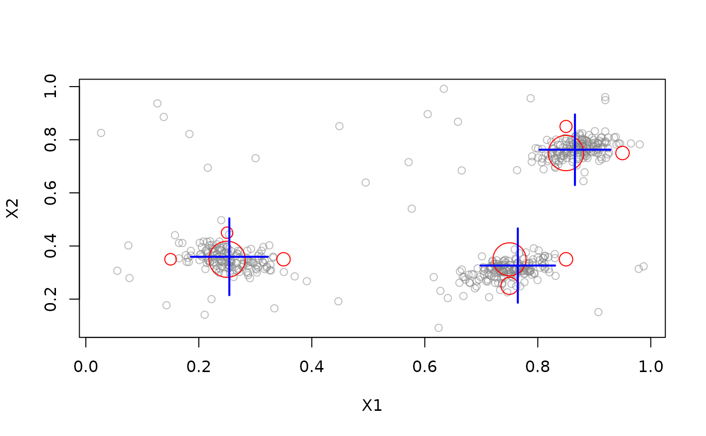
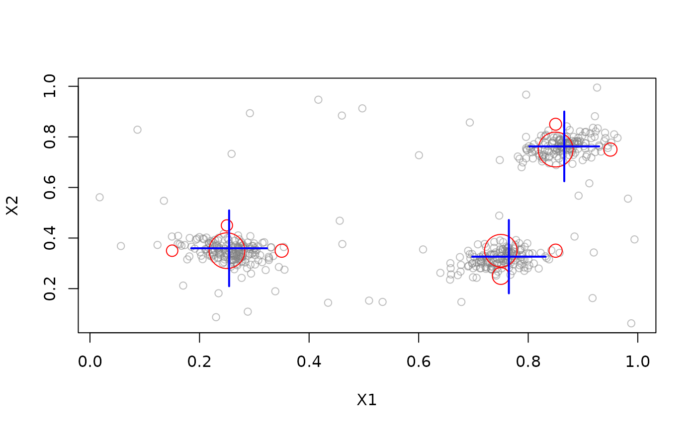

Abstract base classes for Data Stream Clustering (DSC).
Concrete implementations are functions starting with DSC_ (RStudio use auto-completion with Tab to select one).
Usage
DSC(...)
get_centers(x, type = c("auto", "micro", "macro"), ...)
get_weights(x, type = c("auto", "micro", "macro"), scale = NULL, ...)
get_copy(x)
nclusters(x, type = c("auto", "micro", "macro"), ...)
get_microclusters(x, ...)
get_microweights(x, ...)
get_macroclusters(x, ...)
get_macroweights(x, ...)Details
The DSC class cannot be instantiated (calling
DSC() produces only a message listing the available implementations),
but they serve as a base
class from which other DSC classes inherit.
Data stream clustering has typically an
Class DSC provides several generic functions that can operate on all
DSC subclasses. See Usage and Functions sections for methods.
Additional, separately documented methods are:
update()adds new data points from a stream to a clustering.predict()predicts the cluster assignment for new data points.plot()plots cluster centers (seeplot.DSC()).
get_centers() and get_weights() are typically overwritten by
subclasses of DSC.
Since DSC objects often contain external pointers, regular saving and
reading operations will fail. Use saveDSC() and readDSC()
which will serialize the objects first appropriately.
Functions
get_centers(): Gets the cluster centers (micro- or macro-clusters) from a DSC object.get_weights(): Get the weights of the clusters in the DSC (returns 1s if not implemented by the clusterer)get_copy(): Create a Deep Copy of a DSC Object that contain reference classes (e.g., Java data structures for MOA).nclusters(): Returns the number of micro-clusters from the DSC object.get_microclusters(): Used as internal interface.get_microweights(): Used as internal interface.get_macroclusters(): Used as internal interface.get_macroweights(): Used as internal interface.
See also
Other DST:
DSAggregate(),
DSClassifier(),
DSOutlier(),
DSRegressor(),
DST(),
DST_SlidingWindow(),
DST_WriteStream(),
evaluate,
predict,
stream_pipeline,
update
Other DSC:
DSC_Macro(),
DSC_Micro(),
DSC_R(),
DSC_SlidingWindow(),
DSC_Static(),
DSC_TwoStage(),
animate_cluster(),
evaluate.DSC,
get_assignment(),
plot.DSC(),
predict,
prune_clusters(),
read_saveDSC,
recluster()
Examples
DSC()
#> DSC is an abstract class and cannot be instantiated!
#>
#> Available subclasses in ‘package:stream’ are:
#> DSC_BICO,
#> DSC_BIRCH,
#> DSC_DBSCAN,
#> DSC_DBSTREAM,
#> DSC_DStream,
#> DSC_EA,
#> DSC_Hierarchical,
#> DSC_Kmeans,
#> DSC_Macro,
#> DSC_Micro,
#> DSC_R,
#> DSC_Reachability,
#> DSC_Sample,
#> DSC_SlidingWindow,
#> DSC_Static,
#> DSC_TwoStage,
#> DSC_Window,
#> DSC_evoStream
#>
#> To get more information in R Studio, type ‘DSC_’ and hit the Tab key.
set.seed(1000)
stream <- DSD_Gaussians(k = 3, d = 2, noise = 0.05)
dstream <- DSC_DStream(gridsize = .1, gaptime = 100)
update(dstream, stream, 500)
dstream
#> D-Stream
#> Class: DSC_DStream, DSC_Micro, DSC_R, DSC
#> Number of micro-clusters: 10
#> Number of macro-clusters: 3
# get micro-cluster centers
get_centers(dstream)
#> X1 X2
#> 1 0.15 0.35
#> 2 0.25 0.35
#> 3 0.25 0.45
#> 4 0.35 0.35
#> 5 0.75 0.25
#> 6 0.75 0.35
#> 7 0.85 0.35
#> 8 0.85 0.75
#> 9 0.85 0.85
#> 10 0.95 0.75
# get the micro-cluster weights
get_weights(dstream)
#> [1] 12.61439 84.54889 12.09601 17.69871 28.72080 75.17656 17.86366 82.03503
#> [9] 14.08670 18.05219
# get the number of clusters
nclusters(dstream)
#> [1] 10
# get the whole model as a data.frame
get_model(dstream)
#> weight X1 X2
#> 1 12.61439 0.15 0.35
#> 2 84.54889 0.25 0.35
#> 3 12.09601 0.25 0.45
#> 4 17.69871 0.35 0.35
#> 5 28.72080 0.75 0.25
#> 6 75.17656 0.75 0.35
#> 7 17.86366 0.85 0.35
#> 8 82.03503 0.85 0.75
#> 9 14.08670 0.85 0.85
#> 10 18.05219 0.95 0.75
# D-Stream also has macro-clusters
get_weights(dstream, type = "macro")
#> [1] 126.9580 121.7610 114.1739
get_centers(dstream, type = "macro")
#> X1 X2
#> 1 0.2540047 0.3595276
#> 2 0.7646711 0.3264122
#> 3 0.8658111 0.7623379
# plot the clustering result
plot(dstream, stream)

plot(dstream, stream, type = "both")

# predict macro clusters for new points (see predict())
points <- get_points(stream, n = 5)
points
#> X1 X2 .class
#> 1 0.7690475 0.2994956 2
#> 2 0.8736510 0.7594933 3
#> 3 0.7505151 0.3089720 2
#> 4 0.8819702 0.7190794 3
#> 5 0.8371483 0.7096679 3
predict(dstream, points, type = "macro")
#> .class
#> 1 2
#> 2 3
#> 3 2
#> 4 3
#> 5 3